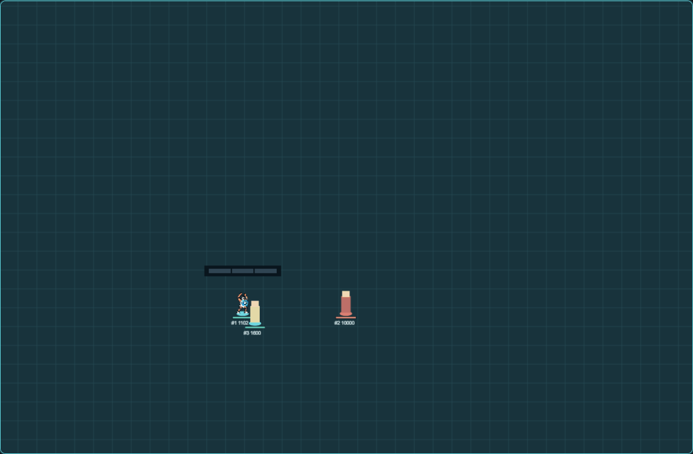
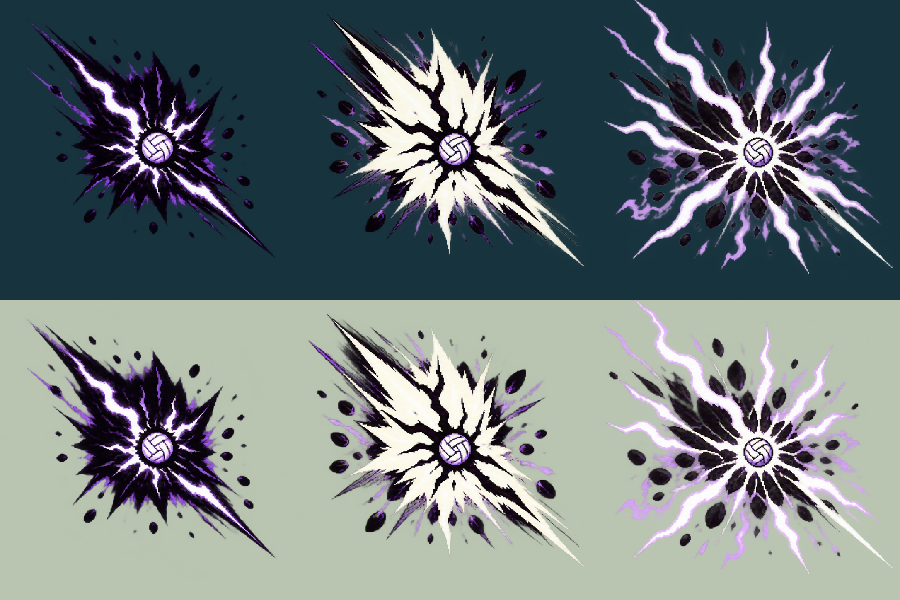
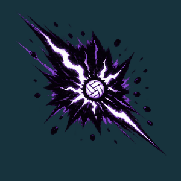
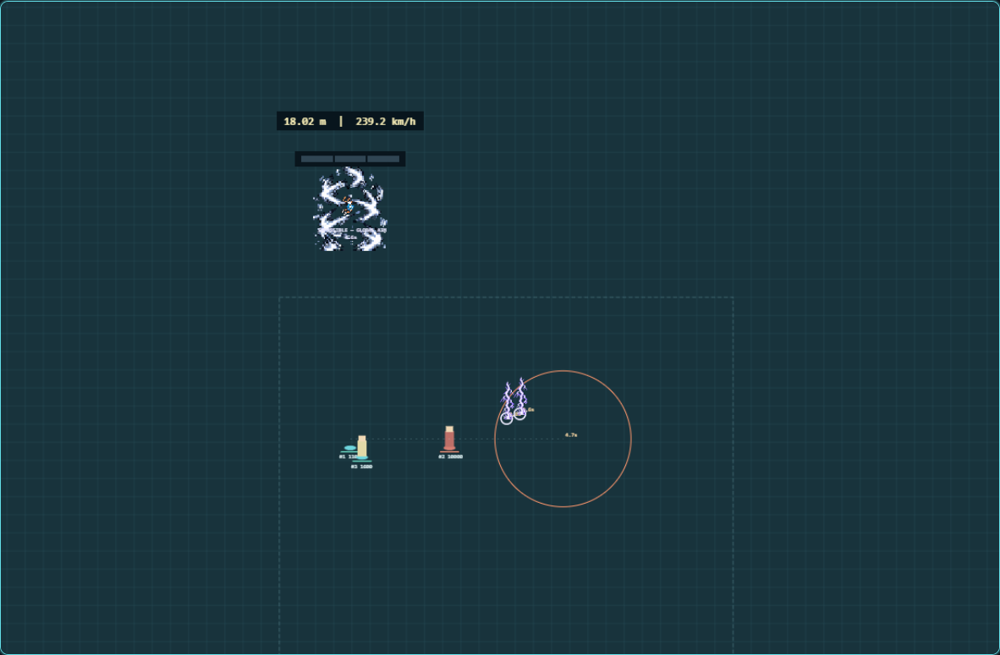

Shared-core prototype and original effect proposals. Artwork approval, native receipt calibration, shipped integration and actual-game acceptance remain separate. Nothing is installed.
Open Lab · Global Serve demo · Local 10 m demo| Route | Qualification | Range / base radius |
|---|---|---|
| Without Serve | Prior White, five-bar play, perfect takeoff, valid contact ≥10 m | 400,000 / 80,000 |
| Serve Impossible | Prior White, five-bar play, perfect takeoff and valid contact | Current map or realm / 120,000 |
Every ordinary Serve can aim in any direction. Overpressure adds 20% radius at 300+ km/h. Neither mode reveals concealed enemies.

Charge for five seconds: four seconds of aiming and one locked second. This setup builds 470→670 Power and 231.3→329.7 km/h. Impossible uses half its calculated speed, capped at 600 km/h.


Three drawings, two ticks each: compression, reversed contrast and fractured expansion. Release and landing use independent event clocks. No simulation pause, full-screen flash or extra control.
References reviewed: Ian Zhang, 0:15 · ZiShen44, sequence/finalization guide. Drawings are original adaptations; image generation itself is not deterministic. Frozen sources, extraction and hashes are recorded.

Two warned patches every half-second, each 12,000 radius: 0.4-second warning, then 0.6 seconds of 15% slow. Warned positions stay fixed, and later patches follow the new aim. Patches add no damage or knock-up and cannot stack their slow.
The ball passes harmlessly through units and walls. Only its endpoint damages: 100% centre, 62.5% halfway and 25% boundary. Knock-up and crater slow still cover the whole eligible blast footprint. Black-tier non-Impossible craters now slow 20% for two seconds.
Pace is a plain bar split into three equal sections. Roles and exact resource values remain in the inspector. Height and km/h stay together during charging and release.
Native Receive/support receipts remain disabled until verified. Lab receipts are simulated. The native adapter builds, but screenshots and this animation demonstrate the Lab rather than actual game rendering.
3.2 implementation and verification · Preserved 3.1 evidence · Preserved 3.0 evidence